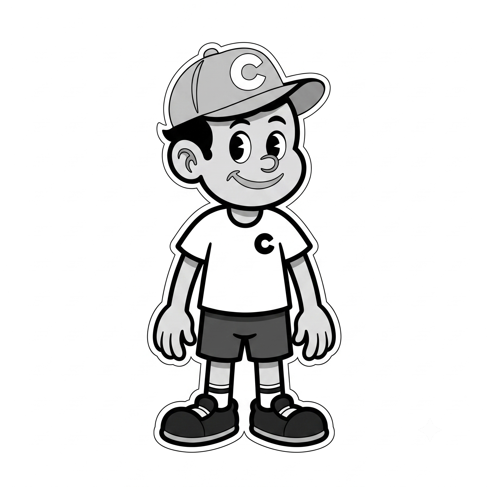

VR Code City
VR Code City
VR Code City
VR Code City
Visualización espacial de repositorios y análisis de código multijugador en Realidad Virtual asistido por IA.

Recorrido completo por la plataforma VR Code City: visualización de repositorios como ciudades 3D, interacción con el agente de IA contextual (The Oracle) y sesión colaborativa multijugador en tiempo real con WebRTC.
Visor de PDF — Disponible próximamente
Diseñar y desarrollar una plataforma WebXR multijugador que permita transformar repositorios de GitHub en ciudades 3D interactivas, integrando un agente de IA contextual para el análisis colaborativo de código en Realidad Virtual.
Arquitectura cliente-servidor con A-Frame y Three.js en frontend, Node.js y Express en backend, Networked-Aframe con Socket.io y EasyRTC para comunicación en tiempo real, y OpenRouter API para integración de modelos de lenguaje.
La plataforma demuestra la viabilidad de la visualización espacial de código como herramienta de análisis. Las iteraciones futuras integrarán herramientas de análisis estático más profundas y optimización del renderizado para repositorios monolíticos de gran escala.
Conversión dinámica de repositorios de GitHub en ciudades 3D interactivas. Los directorios se transforman en distritos y los archivos en edificios cuya altura representa las líneas de código.
Asistente de inteligencia artificial integrado en el entorno VR. Utiliza RAG guiado por la mirada del usuario para ofrecer análisis contextual en tiempo real a través de OpenRouter API.
Presencia compartida en tiempo real con avatares 3D, seguimiento de cabeza y manos, y chat de voz P2P. Colabora con tu equipo como si recorrieran la misma ciudad física.
Crea un archivo .env en
el directorio raíz:
Nota: Para WebXR con cascos como Meta Quest, se requiere un túnel HTTPS seguro (ej. NGROK) o un certificado SSL local.